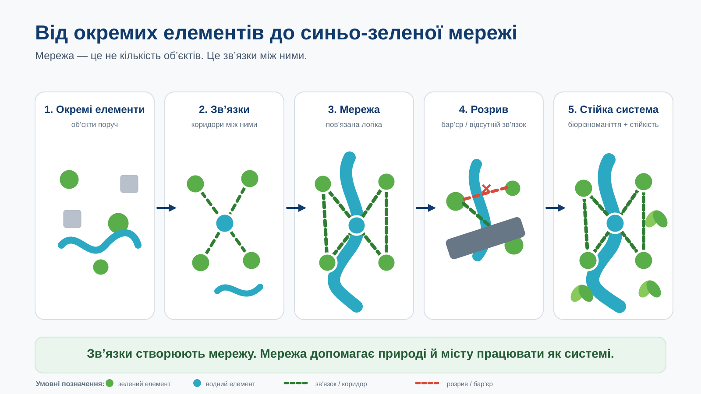

Водні елементи
річка, струмок, канал, водойма, простір для утримання води
Чи пов’язаний водний елемент із зеленими та іншими релевантними міськими просторами?
Модуль 2 · Природоорієнтовані рішення для стійкості міст
У місті можуть бути річка, парк, сквер, зелена вулиця й система водовідведення. Але самі по собі окремі об’єкти ще не утворюють єдиної міської системи.
Ключове управлінське питання: що змінюється, коли місто перестає розглядати воду, зелені простори й коридори окремо та починає бачити зв’язки між ними?
Ескіз логіки синьо-зеленої мережі для громади.
Це не інженерне креслення і не ГІС-карта. Це перша управлінська схема: які елементи вже є, як вони пов’язані, де є розрив і який зв’язок варто перевірити або посилити.
Уявіть громаду, де вздовж річки є зелена зона, неподалік — міський парк, а між ними проходить вулиця з інтенсивним рухом. В іншій частині міста є сквер і зелений двір школи. Кожен об’єкт корисний сам по собі, але між ними немає зрозумілого просторового або функціонального зв’язку.
Коли місто планує кожен об’єкт окремо, частина системної користі може втрачатися. Простори залишаються фрагментованими, а зв’язки між водними й зеленими елементами не враховуються у міських рішеннях.
Від окремих об’єктів до системи
Повернімося до умовної громади: річка, парк і зелена вулиця вже є. Питання в тому, чи працюють вони як пов’язана система.
Для міського керівництва синьо-зелена мережа — це система зв’язків між водними елементами, зеленими просторами та релевантними коридорами. Її цінність не лише в кількості парків чи водойм, а в тому, як ці елементи взаємодіють і підтримують стійкість міста.

Не кожна транспортна вулиця є частиною синьо-зеленої мережі. Вона релевантна тоді, коли підтримує зв’язок між природними елементами або може бути переосмислена для такого зв’язку. В іншому разі транспортний коридор може залишатися бар’єром і розривати мережу.
річка, струмок, канал, водойма, простір для утримання води
Чи пов’язаний водний елемент із зеленими та іншими релевантними міськими просторами?
парк, сквер, озеленена територія, зелені двори
Чи працюють вони як ізольовані «острови» чи як частини системи?
просторові смуги, зелені вулиці, узбережжя та інші релевантні зв’язки
Чи допомагають вони з’єднати елементи, чи створюють бар’єр?
Зв’язність · фрагментація · стійкість
У нашій умовній громаді магістраль між річкою та парком — не просто елемент вулиці. Вона може бути бар’єром, який послаблює зв’язність системи.
Фрагментація виникає, коли природні та просторові елементи існують поруч, але не працюють як пов’язана система. Для міського керівництва це практичний сигнал: рішення про парк, вулицю, водойму чи відновлення території можуть послаблювати одне одного, якщо їх планувати окремо.
У цьому занятті біорізноманіття важливе не як окрема академічна тема. Воно допомагає побачити, чи підтримує міський простір безперервність і взаємодію природних елементів.
Коли зелені та водні простори пов’язані, природні елементи мають кращі умови працювати як система. Коли зв’язки розірвані, система стає більш фрагментованою. Для управлінця головне питання — не «скільки видів ми маємо?», а «чи наші просторові рішення підтримують зв’язність природної системи?»
Пов’язана синьо-зелена система допомагає розглядати воду, зелені простори й міські коридори в одній логіці планування. Для мешканців це означає більш послідовні рішення про міський простір і його стійкість.
Досвід міст і український контекст
Копенгаген показує, як водні рішення можна поєднувати з міським плануванням і ширшими перевагами для міста. Для цього заняття важливий принцип: вода, вулиці та міський простір можуть плануватися як частини взаємопов’язаної системи.
Københavns klimatilpasningsplan ↗Роттердам показує іншу корисну ідею: міський простір може одночасно виконувати повсякденну функцію та допомагати працювати з водою. Для керівника громади це приклад того, як водні рішення можна вбудовувати у ширшу просторову логіку міста.
Rotterdam — future-proof water storage ↗Європейські матеріали з міської природи та зеленої інфраструктури підкреслюють значення міської природи, біорізноманіття та синьо-зеленої інфраструктури для планування. Для цього заняття важлива головна ідея: елементи варто розглядати не ізольовано, а через їхні зв’язки й функції у міській системі.
EU Urban Nature Platform ↗Для українських громад тема синьо-зелених мереж пов’язана з ширшим завданням стійкого відновлення. DREAM Green Recovery формує контекст зеленого відновлення, SUN4Ukraine підтримує інтеграцію кліматично нейтрального планування у відновлення, а матеріали CoM East / ICLEI висвітлюють міську кліматичну стійкість в українському контексті.
Важлива межа: ці матеріали корисні як контекст для управлінських рішень, але не підтверджують завершену синьо-зелену мережу в конкретному українському місті. Тому їх варто використовувати саме як контекст, а не як приклад уже реалізованої мережі.
Спробуйте прийняти перше рішення
Повернімося до умовної громади з початку заняття. Тут є річка, міський парк і зелена вулиця. Парк розташований близько до річки, але між ними — широка транспортна магістраль без природного або просторового зв’язку. Місто також розглядає ще один невеликий сквер в іншій частині району.
Натхнення перед Вашим ескізом
Ці офіційні матеріали допомагають подивитися ширше на міську природу, зелену інфраструктуру та природоорієнтовані рішення перед роботою над власним ескізом.
Що тут знайдете? Європейську рамку міської природи, біорізноманіття та планування.
Коли корисно? Коли потрібно перевірити, як Ваш ескіз пов’язаний із ширшою логікою міської природи.
Відкрити ресурс ↗Що тут знайдете? Офіційне пояснення зеленої та синьої інфраструктури і її системної ролі.
Коли корисно? Коли потрібно уточнити, чому окремі елементи варто розглядати через зв’язки та функції.
Відкрити ресурс ↗Що тут знайдете? Приклади й пояснення природоорієнтованих рішень у європейській практиці.
Коли корисно? Коли потрібно побачити різні способи поєднання природних функцій із міськими потребами без копіювання одного готового рішення.
Відкрити ресурс ↗Ваш Портфель мера
Ваше завдання — не створити точну карту, а зробити першу управлінську схему. Використовуйте те, що вже знаєте про громаду. Якщо даних бракує, позначте це як питання для перевірки.
Якщо Вам потрібна підтримка, скористайтеся Сократ-наставником UCAN. Він допоможе крок за кроком створити «Ескіз логіки синьо-зеленої мережі для громади» для «Портфеля мера»: назвати 3–5 водних і зелених елементів, визначити наявні зв’язки, знайти один розрив, пояснити можливу системну функцію та сформулювати перший управлінський крок. Наставник ставить уточнювальні запитання, але не виконує завдання замість Вас.
Як почати: відкрийте наставника та напишіть «Привіт». Він ставитиме по одному запитанню за раз.
Наставник відкриється в Gemini у новій вкладці. Не вводьте конфіденційних даних. Після діалогу перенесіть власні відповіді до п’яти полів ескізу нижче.
За бажанням · необов’язкова підтримка
AI працює лише з тим текстом, який Ви самі введете в ескіз. Спочатку скопіюйте підготовлений промпт, а потім за бажанням відкрийте обраний сервіс і вставте його вручну.
Попросіть AI перевірити зв’язок між елементами, наявними зв’язками, розривом, функцією та першим управлінським кроком — без вигадування фактів про Вашу громаду.
Попросіть AI зробити Ваш перший крок коротшим, яснішим і більш дієвим — без фінансових моделей, інженерної специфікації чи заміни управлінського судження.
Промпт копіюється у буфер обміну лише після Вашої дії. Дані ескізу не передаються автоматично і не додаються до зовнішніх URL.
Фінальна перевірка
Для завершення заняття потрібно 5 правильних відповідей із 5. Кількість спроб не обмежена.
Щоб перейти до завершення, поверніться до фінальної перевірки й наберіть 5/5.
Щоб перейти до завершення, поверніться до перевірки знань і наберіть 5/5.
Перенесення у практику
Ви можете відрізнити набір окремих синіх і зелених об’єктів від пов’язаної системи та пояснити, чому фрагментація, біорізноманіття і стійкість пов’язані між собою.
У Вас є «Ескіз логіки синьо-зеленої мережі для громади» — основа для командної розмови про елементи, зв’язки, розрив і перше питання для перевірки.
Який один розрив у природній або просторовій системі Вашої громади Ви тепер бачите інакше?
Візьміть свій ескіз на розмову з командою та перевірте один зв’язок або бар’єр, який може вплинути на цілісність системи.